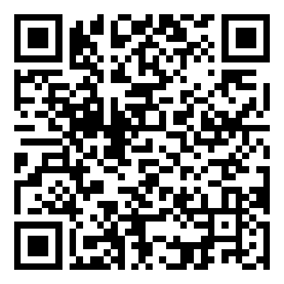

0-click.com
A note for managers, CISOs, and anyone responsible for a team.
You may have arrived here after the experience on the main page — or someone sent you straight to this note. Either way: 0-click.com is a single page that briefly shows a visitor how much their own browser reveals the moment they arrive, then explains, in plain language, how that works and what to do about it. It is free, it sells nothing, and it keeps nothing.
This page explains how it can be useful to you specifically — not as a visitor, but as someone who has to think about a whole team.
The idea, in one line
Every visit to 0-click.com quietly produces a handful of ordinary, harmless side-channel events — a page load, a file written to the Downloads folder, a browser API touched. These are exactly the kinds of events your security monitoring is supposed to see.
So: share one link with your staff. Each visit generates the same set of detectable events. Afterwards, ask whoever runs your monitoring one question — "which of these did we see?" If they saw all of them, your visibility works. If they saw fewer, each miss is a concrete blind spot you can now name and fix. No agents to install, no purchase, nothing sent to anyone.
What a single visit emits
Grouped by the layer of your stack that ought to catch it:
- NETWORK — DNS + TLS to the site, plus a couple of same-origin fetches and (only if the visitor chooses) one lookup to a public IP-geolocation service. Your proxy, DNS filter, or SIEM should log these.
- ENDPOINT — one or more text files written into the Downloads folder. Your EDR / DLP should record the file-create events.
- BROWSER-API — fingerprinting reads (canvas, WebGL, audio, fonts, and so on). These are mostly invisible to a normal monitoring stack — and that gap is itself a useful thing to know.
The visitor can pull the full, per-visit manifest themselves: on the main page, opening the browser console and running window.synapse.soc() downloads the_SOC_view.txt — a timestamped list of exactly what fired this visit, with a suggested verification query for each event. That file is the thing to hand to your security team.
How to run it with your team
- Share the link: https://0-click.com. Let people experience it — it is short and self-explanatory.
- Have a technical colleague grab
the_SOC_view.txtfrom a visit (console,window.synapse.soc()). - Bring the manifest to whoever owns your monitoring and ask, event by event: did we see this?
- Every "no" is a mapped blind spot. That list is your starting point — not a verdict, a to-do.
The standing to ask — NIS2
If your organisation falls under NIS2 (in Czechia, zákon č. 264/2025 Sb., effective 1 November 2025; in the EU, Directive 2022/2555), then having basic visibility into events like these is not optional — and that means you are entitled to ask whether you have it. Three questions worth raising:
- If a file like this downloaded on a staff machine, would anyone notice?
- When someone reports a suspicious email, who reads the report — and how fast?
- Are we in scope for NIS2, and if so, what is each role actually expected to do?
This is framing for your own conversations, not a compliance product and not advice tied to any vendor or authority. The author has no partnership with NÚKIB or anyone else.
Five minutes your staff can spend
- Turn on automatic updates — browser and OS.
- Install a reputable content blocker (e.g. uBlock Origin).
- Lock the screen by reflex:
Win+L/Ctrl+Cmd+Q. - Password manager + two-factor on email first.
- Set browser downloads to "ask where to save", so nothing lands silently.
- Installing software? Verify the installer's published checksum first — how, below.
Offline starter pack — 27001.iso
A small offline bundle you can keep — and yes, it actually mounts; the name is a pun on ISO/IEC 27001. Inside: a one-page plain summary of zákon č. 264/2025 Sb., an offline roles reference (who does what), the public NÚKIB / GovCERT.CZ incident-reporting contacts as a vCard, and the two fixed deadlines as a calendar file. Public information, nothing tracked.
↓ download 27001.iso (~78 KB · MIT · reference only, not legal advice)
Before you open it — verify it
A downloaded file has no memory of where it came from. The way to know it was not altered in transit — by anyone, including this site — is to compare its SHA-256 checksum against a copy of that checksum obtained through a different channel. The published checksum of 27001.iso is:
ba5f09db0e0e07431afe43db003c8ff5d9b8a9233569f80e0b7109e1de79d4b5
Compute it yourself on the file you actually received:
- WINDOWS —
certutil -hashfile 27001.iso SHA256 - MACOS —
shasum -a 256 27001.iso - LINUX —
sha256sum 27001.iso
The QR below carries the same checksum and nothing else — it is plain text, not a link, so a phone can only display it, never "open" it. Scan it with a second device and compare. A third, fully independent copy lives in the project README on GitHub. Two channels agreeing is good; three is better.

Why can't the ISO simply contain its own checksum? Because writing the checksum into the file would change the file — and with it, the checksum. A file can never carry proof of itself; the proof has to travel by another road. That is the whole lesson.
What it does not do
0-click.com has zero data retention. It logs nothing, sets no cookies, runs no analytics, and sends nothing to any server — the only outbound request is the optional, visitor-initiated geolocation lookup. Everything you see is built in the visitor's own browser and forgotten the moment the tab closes. It is safe to share widely.